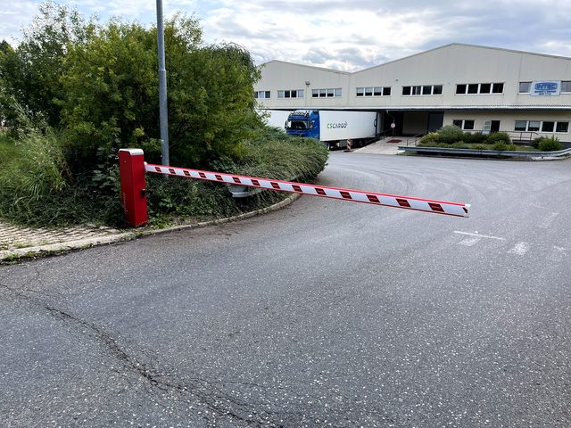

Automatické dveře pro objekty a provozovny
Servis automatických dveří v Praze
Automatické dveře se neotevírají správně, zůstávají otevřené nebo potřebují kontrolu? Zajistíme diagnostiku, seřízení a servis pro provozovny, firmy, SVJ i veřejné objekty.
Co u automatických dveří řešíme
- Dveře nereagují nebo reagují nepravidelně.
- Pohyb dveří je pomalý, hlučný nebo nespolehlivý.
- Zařízení potřebuje kontrolu, seřízení nebo opravu.
- Chcete konzultaci úpravy stávajícího řešení.
Důraz na bezpečný a spolehlivý provoz
Automatické dveře jsou často součástí každodenního provozu objektu. Při servisu proto řešíme nejen funkčnost, ale také spolehlivost, bezpečný chod a praktickou domluvu termínu.
Pracujeme hlavně v Praze a Středočeském kraji pro firmy, SVJ, bytové domy, instituce a provozovatele areálů.
Ukázky práce
Reálné zakázky a technická řešení
Fotky slouží jako důkaz skutečné práce v terénu. Podle konkrétního zařízení vždy doporučíme servis, úpravu, modernizaci nebo nové řešení na míru.

Související služby
Co zákazníci často řeší společně
Potřebujete servis automatických dveří?
Zavolejte a popište závadu nebo typ objektu. Navrhneme další postup.